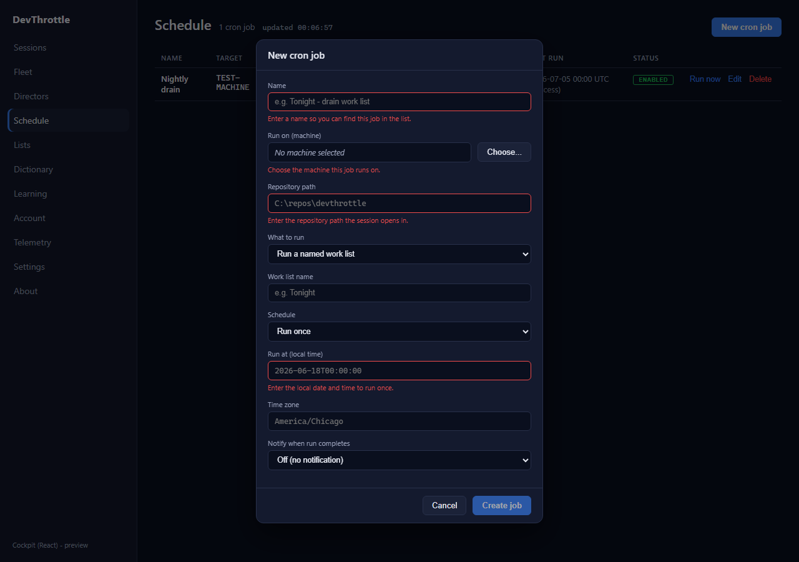
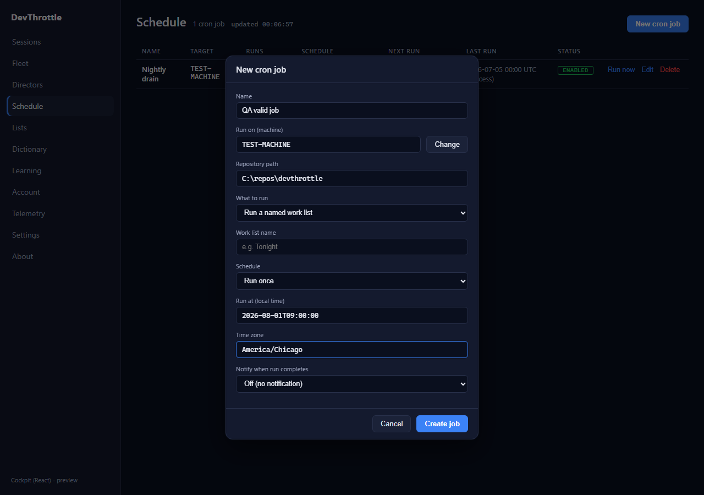
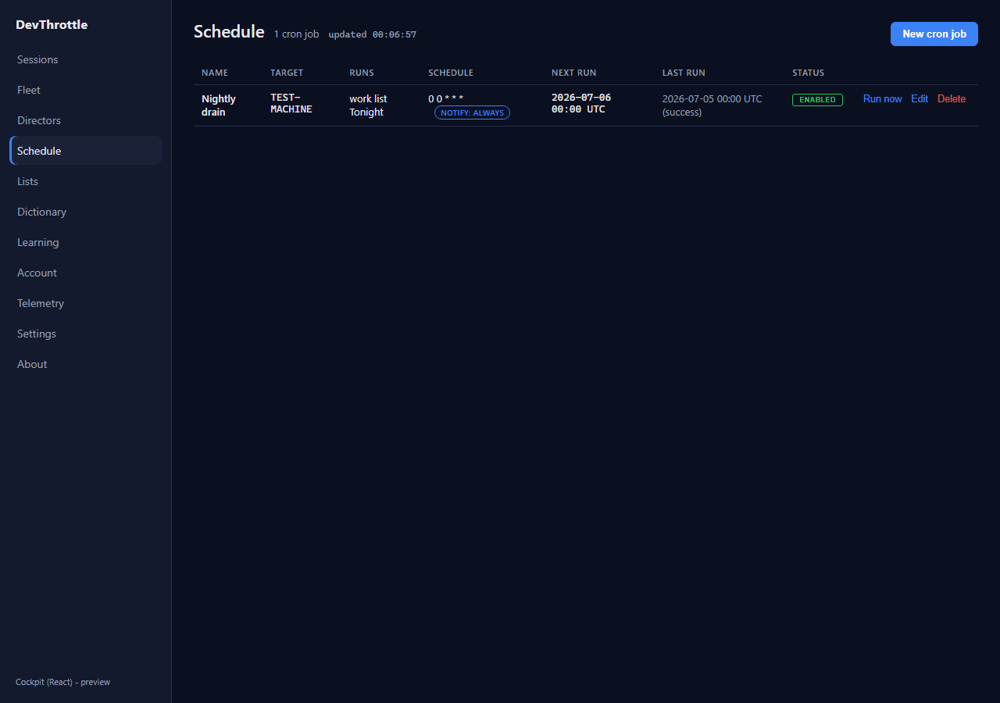

save() also guards on validity so no code path can POST an empty job.toMutableDto() helper that rebuilds a clean create/update body of only the mutable job fields -
the same shape the Edit path's buildFromForm() produces. The Gateway's own computed fields
(nextRunUtc, lastFiredUtc, lastStatus, createdUtc) are no
longer echoed back, while every mutable field the toggle does not change (notify settings, work-list, schedule)
is preserved.| File | Change |
|---|---|
| apps/cockpit/src/schedule/ScheduleView.tsx | validateForm() + FormErrors; live formErrors/formValid via useMemo;
per-field error text and invalid-input class on Name / machine / Repository path / cron / runAt; button disabled
until valid; save() validity guard; toMutableDto() and its use in toggleEnabled. |
| apps/cockpit/src/schedule/schedule.css | Added .sched-fld input.invalid (attention border) and .sched-fld-err (per-field guidance text). |
- await updateCronJob(job.id, { ...job, id: "", enabled: !job.enabled });
+ await updateCronJob(job.id, toMutableDto(job, { enabled: !job.enabled }));
| Criterion | Expected | Actual (captured live) | Status |
|---|---|---|---|
| Submitting an empty form is blocked with clear per-field guidance. | Create button disabled; a guidance message under each missing field. | Button disabled = true; 4 per-field messages shown (name, machine, repoPath, schedule). |
PASS |
| A valid job still creates correctly. | Once name + machine + repoPath + schedule are filled, button enables and POST carries those fields. | Button enabled = true, 0 remaining errors; POST body carries the filled fields (see below). |
PASS |
| The enable/disable toggle sends only mutable job fields (no nextRunUtc / lastFiredUtc / lastStatus / createdUtc). | PUT body has enabled flipped and none of the four computed fields. | PUT body enabled:false; forbidden fields present = [] (clean). |
PASS |
| Full build gate clean. | Cockpit build, lint, Gateway RunCockpitBuild, cc-director.sln all clean. | All four passed with 0 errors (see Build gate). | PASS |
The seeded job carried the Gateway's computed fields; the "New cron job" form was opened and left empty. The Create button is greyed/disabled and each required field shows red guidance.

Filling name, machine (via the picker), repository path, run-at and time zone re-enables the button. The exact POST body the client sent:

{
"name": "QA valid job",
"enabled": true,
"scheduleKind": "oneOff",
"cronExpression": null,
"runAt": "2026-08-01T09:00:00",
"timeZoneId": "America/Chicago",
"target": { "machine": "TEST-MACHINE" },
"action": { "repoPath": "C:\\repos\\devthrottle", "seed": "", "workListName": "" },
"preventOverlap": true,
"notifyOn": "none",
"notifyWebhookUrl": null
}
Clicking the Enabled chip on the seeded job (which the Gateway returned WITH createdUtc / lastFiredUtc / nextRunUtc / lastStatus) sends this PUT body. The four computed fields are absent; enabled is flipped; mutable fields (notifyOn, workListName, schedule) are preserved:
{
"id": "",
"name": "Nightly drain",
"enabled": false,
"scheduleKind": "recurring",
"cronExpression": "0 0 * * *",
"runAt": null,
"timeZoneId": "America/Chicago",
"target": { "machine": "TEST-MACHINE" },
"action": { "repoPath": "C:\\repos\\devthrottle", "seed": "", "workListName": "Tonight" },
"preventOverlap": true,
"notifyOn": "always",
"notifyWebhookUrl": null
}
// forbidden_fields_present: [] (no nextRunUtc / lastFiredUtc / lastStatus / createdUtc)

| Gate | Command | Result |
|---|---|---|
| Cockpit build | npm run build (apps/cockpit) | tsc + vite built, 0 errors |
| Lint | npm run lint (eslint .) | clean, 0 problems |
| Gateway + cockpit staging | dotnet build CcDirector.Gateway.csproj -p:RunCockpitBuild=true | Build succeeded, 0 Warning(s), 0 Error(s) |
| Full solution | dotnet build cc-director.sln | Build succeeded, 0 Warning(s), 0 Error(s) |
npm run dev (or point it at a live Gateway with COCKPIT_PROXY_TARGET). Open /schedule.No drift. This is a client-side change inside the existing Cockpit container (apps/cockpit) over the unchanged Gateway /cron/jobs REST surface. No architecture or security-posture change; no CenCon doc update required.